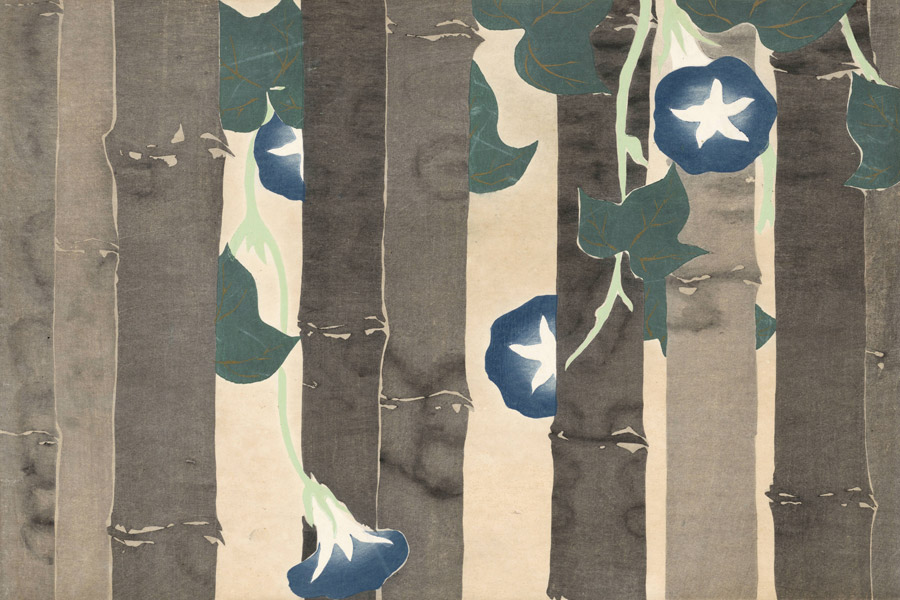

作品名 「朝顔」
花言葉 「はかない恋」「愛情」「結束」「明日もさわやかに」「あなたに絡みつく」
朝顔
「はかない恋」
花名のアサガオ（朝顔）は、朝に花を咲かせ、昼にしぼんでしまう様子を「朝の美人の顔」に例えた「朝の容花（あさのかおばな）」の意味であるといわれています。花言葉の「はかない恋」は、朝咲いて午後にはしぼんでしまう短い命の花であることに由来します。
朝顔
神坂雪佳
神坂 雪佳は、近現代の日本の画家であり、図案家。京都に暮らし、明治から昭和にかけての時期に、絵画と工芸の分野で多岐にわたる活動をした。「朝顔」は、1909-10年に芸艸堂から出版された画集『百々世草』に掲載されていた作品。
| 作品名 | 朝顔 |
| 作者 | 神坂雪佳 |
| 制作年 | 1909年 |
| 種類 | 多色木版摺・越前和紙 |
| 寸法 | 30.0×45.0cm |
| 所蔵 | アムステルダム国立美術館所蔵 |